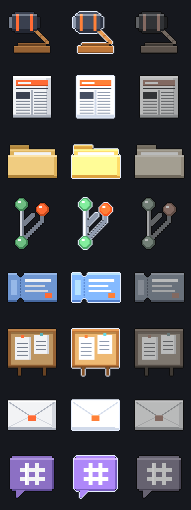

PHILO-12-02 · the canvases F–J (round one)
The real product on an isolated hub; the unbuilt wire and the proposed composition stated in harness/p12.ts. Left 1440 × 900, right 393 × 852.
- Renders: 71 (36 at 1440, 35 at 393), each width on its own hub and HOME. Fence failures: 0.
- Named elements on screen (in the viewport, inside every clipping ancestor, on top): 69 of 69.
- Menu rows at 393 (the chrome strip rule: 44 px high, nine points owned, measured with elementFromPoint): 84 of 84.
- Drop tags drawn: 4 (NO PUBLISHED UPDATE, NO SUMMARY, PARKED, Preview for Slack #leads); tags with the word Send: 0; egress chips on a tag: 0.
- Raw `<button>` in the proposal (menus, tag, artifact window): 0. Text under 12 px in the proposal: 0. Counters of zero: 0. Modals: 0. Horizontal overflow: 0.
- Browser errors (page errors and console errors other than 4xx reads): 0.
The art default 7; faces F2
Rows: the decision (a gavel), the brief (a folded broadsheet), FILE, GITHUB, JIRA, CONFLUENCE, EMAIL, SLACK. Columns: rest, _sel, _stale (the product's own state script). 64 × 64 pixel art, house palette, no brand logos.

F1 · Destinations at the right edge F · defaults 1, 2, 6, 7
1440: the folder, Slack and GitHub destinations in one column at the right edge, the brief icon on top; parked ones absent. 393: the list, no destination row, the brief row.
F2 · A destination's menu: Open only F · default 8; Open only supersedes grounding F2
1440: Slack #leads selected, its menu holds Open, nothing else (Park and Remove stay in Settings). 393: the phone has no icon; Settings is the door.


F2b · Open lands on that destination's row F · default 8; Astra r1 finding 6
Settings → Destinations opened at Slack #leads, the row open (not the add form).


F3 · No destinations: nothing drawn F · UX-CANON A.8
The folder parked through the real route, no stand-ins: no icon and nothing in their place. The brief stays.


F4 · The decision's own sprite F · faces F2 (red on main: the note sprite)
1440: the decision wears the gavel (selected: the _sel image, the accent label chip) among notes. 393: the list row carries the same art.


F5 · The six channel sprites F · default 7
1440: one destination per channel: folder, Slack, GitHub, Jira, Confluence, email; at the foot the column wraps into a second column to its left. 393: the same six in Send to ▸, each with its channel word.


G1 · A decision held over Slack #leads G · default 4; faces F4
1440: the tag Preview for Slack #leads, opened to the left near the edge, one line; the target lit. 393: the menu path, Send to ▸ open.


G2 · Released: the window, Slack picked, the preview G · default 10; design §6
The decision window opens at the drop point with Slack #leads picked, the preview loaded, Send and the egress chip HOOKS.SLACK.COM in the well. Nothing sent.


G7 · A second pick on the open window G · Astra r1 finding 4
The decision dropped again on Team folder (393: the Go menu, the window covering the list): the same window changes its pick in place (no second window).


G3 · Sent G · design §6
He pressed Send: POSTED in the same well (the stand-in dispatch; nothing left the machine).


G4 · A meeting with no summary G · faces F5; default 3
1440: the tag NO SUMMARY in the warning look, the target not lit; release opens nothing. 393: Send to ▸ withheld on that meeting.


G4b · A project with no published update G · default 5
1440: the tag NO PUBLISHED UPDATE. 393: Send to ▸ withheld on that project.


G4c · A destination parked since the last read G · design §6
1440: the tag PARKED over the GitHub icon still on the Floor. 393: after the read, Send to ▸ no longer lists it.


G5 · A meeting dropped: Summary first G · default 9
The meeting window, the picker on SUMMARY, Slack #leads picked and its preview.


G8 · Summary → Digest keeps the destination G · Astra r1 finding 4
The picker moved to DIGEST: Slack #leads stays picked and the digest's preview loads for it.


G6 · A project dropped: its latest published update G · default 5; Astra r1 finding 1
The Room at the Update posture on the latest published update, Team folder picked, its preview.


G9a · The Room open on an older update G · Astra r1 finding 1
Before: he has the older published update open in the Room (one milestone in its Progress).


G9b · The open Room switches to the linked update G · Astra r1 finding 1
A pick on the project from the menu bar (the open Room covers its icon at 1440 and the list at 393): the open Room switches to the latest published update (Old ledger frozen in its Progress), Slack #leads picked.


H2 · Send to ▸ open H · design §3
1440: the submenu beside the panel, each destination with its channel word. 393: the submenu replaces the panel, the back row first.


H2b · The same menu in the list (1440) H · Astra r1 finding 2 (one composition)
The list view at desktop width: the row menu with Send to ▸ open.

H3 · No destinations: Add destination H · Phase 10 B2
Send to ▸ holds one row, Add destination.


H3b · Add destination opens the form H · Phase 10 B2
Settings → Destinations with the add form open.


H4 · A note: Send to ▸ withheld H · default 3; UX-CANON A.11
The note's menu has no Send to ▸ (not a ghost row).


H6 · The brief row in the list H · default 6; Astra r1 finding 5
The brief row (BRIEF <day>) in the list with Send to ▸ open.


H7a · A read still loading: CHECKING H · design §2 (pending is never a refusal)
The meeting's summary read held loading: the row reads Send to · CHECKING and stays.


H7b · A failed read: CAN'T CHECK H · design §2; UX-CANON A.10
The read failed: Send to · CAN'T CHECK; the rows stay pickable.


H7c · A pick on a failed read opens the window H · design §2
Team folder picked on the failed read: the meeting window opens; its well tells the truth (a summary: the preview).


I4 · No brief yet: no icon, no row I · default 6
Before any brief: no brief icon on the Floor (1440) and no brief row in the list (393).


I1 · The brief icon I · default 6
1440: the brief icon BRIEF <day> at the top of the column, selected. 393: the brief row in the list.


I2 · Opened: Intelligence → BRIEF I · default 6; Astra r1 finding 4
Intelligence → BRIEF on the exact stored id (read by id, GET /api/brief/{id}).


I3 · The brief dropped on Slack #leads I · default 6
Intelligence → BRIEF with Slack #leads picked and the brief's preview.


J1 · The artifact window with its SEND well J · faces F10; default 11
The artifact window: the body, then SEND with the destinations; its three raw buttons are library Buttons.


J2 · An artifact dropped on the folder J · default 11; design §4
Team folder picked; the preview is the stored body with the synthesis source footer left out.


J2b · Saved J · design §4
He pressed Send: SAVED in the same well.